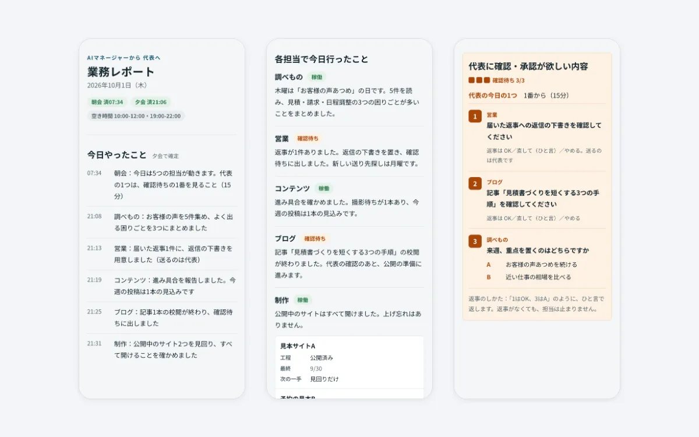
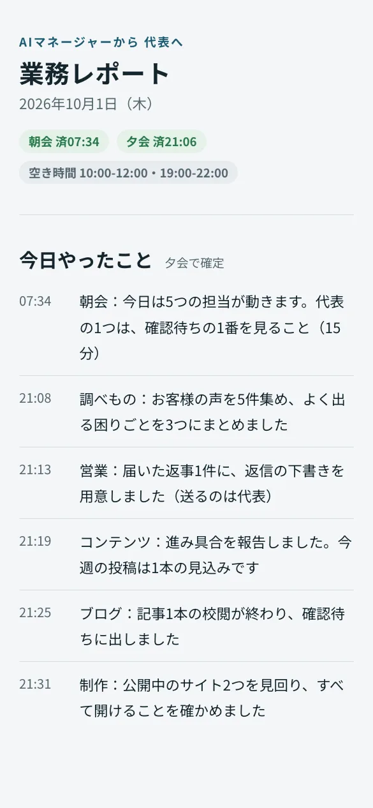
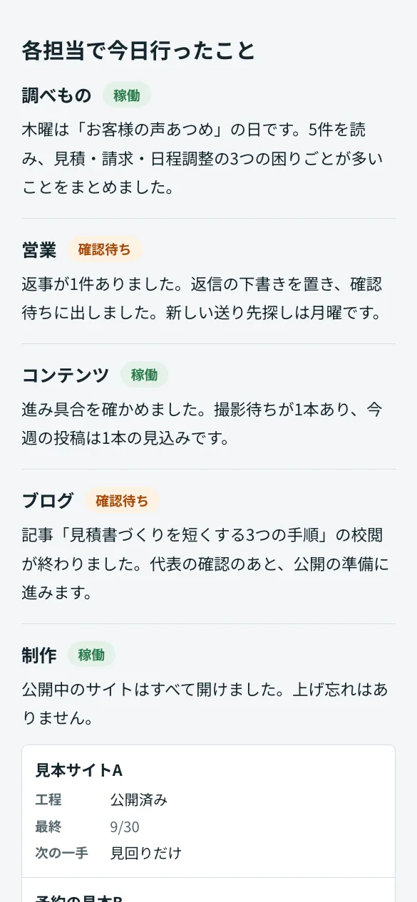
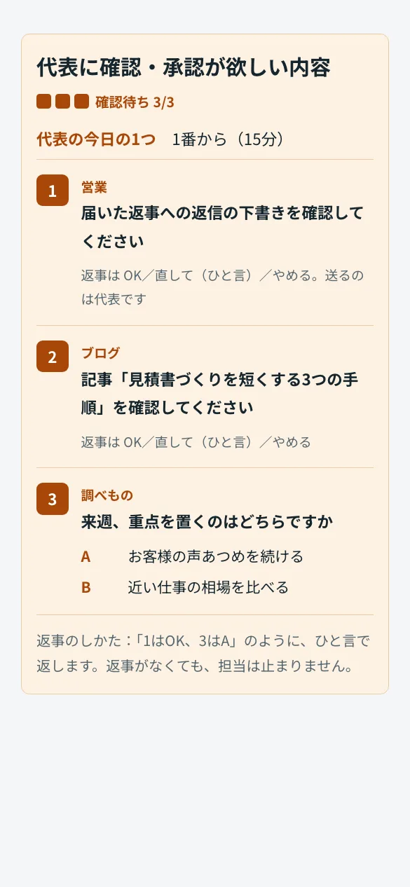

AIのマネージャーと5つの担当で業務を回す仕組み
毎朝・毎晩の決まった時刻に、AIのマネージャーが5つの担当（調べもの・営業・コンテンツ・ブログ・制作）に仕事を振り、結果を1枚のレポートにまとめる仕組みです。公開・送信・削除は人が行います。自分の事業のために企画から作り、運用しています。

困りごと
「使える時間は限られている。調べもの・営業・発信・制作とやることが多く、その時間をどこに使うかを、毎日自分で決めるのが大変。」
そこで、AIが毎日進み具合を見て仕事を振り、人は確認と判断だけをすればよい形を目指しました。
作ったもの

朝と夜に1枚のレポート
毎日7時半と21時に動くように設定しています。予定表の空き時間と、今日やったことを1枚のページにまとめ、1行の通知で知らせます。

5つの担当が順番に動く
マネージャーが担当を1人ずつ呼び、曜日ごとの決まった仕事と、頼まれた仕事をしてもらいます。1人が失敗しても、ほかの担当は止まりません。

人の確認は3件までに絞る
人に確かめてほしいことは、番号と選択肢をつけて3件までにします。3件たまったら、担当は確認の要らない仕事だけをします。返事は「1はOK、3はA」のようにひと言で済みます。
画面は、架空のデータを入れて撮影しています。
工夫したこと
- AI がしてよいことを表で分ける
- 「自動でしてよい」「人の OK のあとにする」「自動ではしない」の3つに分け、すべての担当に守らせます。公開・送信・削除は自動ではしません。
- 人の窓口は1つ
- 人はマネージャーにだけ話せば、担当への振り分け・伝言・結果のまとめまで行います。担当ごとに話しかける必要はありません。
- 人が動けない日も止まらない
- 催促はしません。予定表の空き時間が2時間未満の日は、人への頼みごと（今日の1つ）を出しません。確認待ちが3件たまったら、担当は確認の要らない仕事だけを進めます。
進め方
どの仕組みも、次の5つの観点で整理して作っています。
- 目的から決める
だれが・いつ・何のために使うかを先に決め、「どうなれば完成か」を1つずつ言葉にする
「限られた時間を、いちばん効くところに向ける」をマネージャーの役目として最初に決めました。マネージャーは中身を作らず、振り分け・まとめ・進み具合の確認だけをします。
- 続けられる使いやすさ
使う人が無理なく続けられる分量と読みやすさを、先に決める
報告は1行の通知と1枚のページにまとめ、人への頼みごとは1日1つ・15分の大きさにしています。
- データの安全
どのデータをどこへ送ってよいかを先に決め、それ以外には送らない
読んでよい場所・書いてよい場所を表で決め、予定表やメールは「読む」「下書きを作る」までにしています。
- 壊さない・失わない
直しても崩れない作りにし、前の状態に戻せるようにする
日報など決められたもの以外は、いまあるファイルの書き換え・移動を人の OK のあとにしています。担当の失敗は日報に残し、次の回で続きができるようにしています。
- 使いながら育てる
実際に使い、気づいた所を直す
2026年9月から運用し、気づいた点で決まりを直しています（例: 予定表の空き時間をレポートに加えました）。
安全とデータの扱い
- パソコンの中で動きます。読んではいけないフォルダ（ほかの仕事や私生活の資料）を決め、そこは読まない決まりにしています。
- 予定表は読むだけです。記録するのは空いている時間帯だけで、予定の件名・場所・参加者は書きません。
- メールは、届いた返事を読んで返信の下書きを作るまでです。送信・削除はしません。
- 公開・投稿・送信・削除と、お金のかかるサービスの利用は、自動ではしません。
- 日報とレポートには、個人の名前や連絡先を書きません。レポートのページは本人だけが開けます。
納品物のイメージ
- 設定一式
- マネージャーと各担当への指示書、毎日の朝会・夕会の設定、日報とレポートのひな形
- 運用の手順書
- 依頼と返事のしかた、AI がしてよいことの表、担当を休ませるときの決まり
見本の仕組みは自分の事業用のため、一部そろっていない資料もあります。